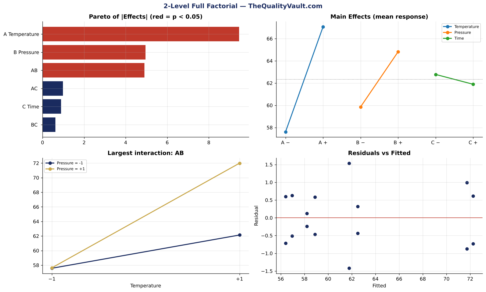
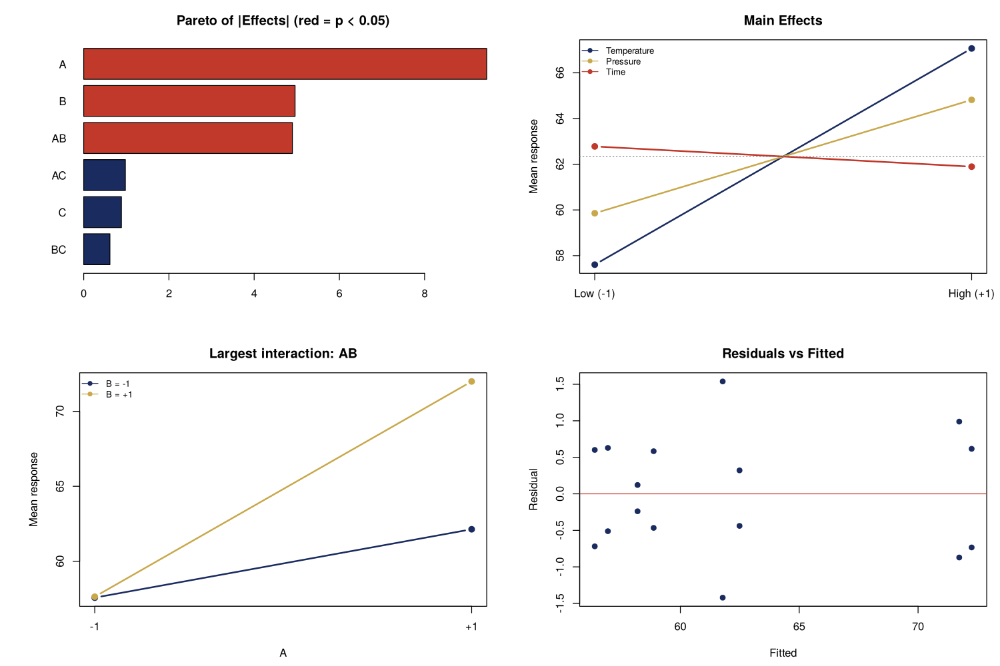

Plan and analyse 2^k full factorial experiments (2–5 factors, 1–3 replicates): design matrix in standard order, randomised run order, effects, coefficients, ANOVA (main effects + two-factor interactions), R² and a Pareto of effects. Excel, Python and R give identical results.
Start on the Example tab to see a finished analysis, then switch to Blank Template for your own data.
The Excel, Python and R versions give the same results on the worked example.
Python needs the packages named on its download card; R uses base R. Both run the worked example with demo and accept your own CSV.
python doe_factorial.py demo
python doe_factorial.py design --factors Temp:150:180 Pressure:2:4 Time:10:20 --reps 2 --seed 7 --out plan.csv
python doe_factorial.py analyze --csv plan_with_results.csv --response Y --save doe.png
Rscript doe_factorial.R
Temperature effect +9.46, Pressure +4.96, Temperature×Pressure +4.90 (all p < 0.0001); Time not significant. R² = 98.3 %.

